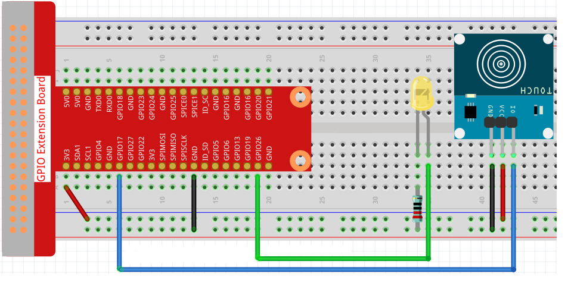
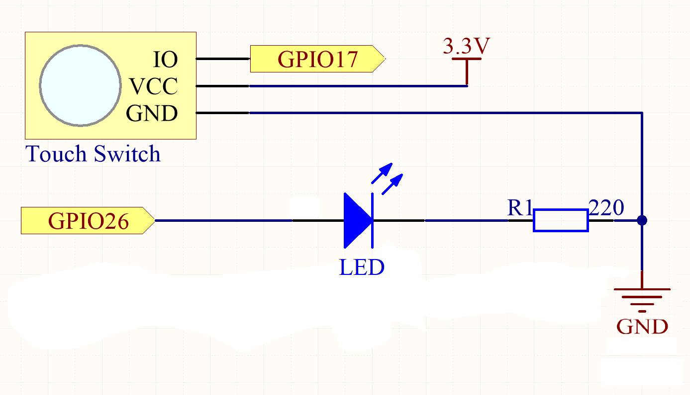

Touch Switch
Overview
This section provides details of a touch switch sensor implementation, including its circuit diagram, required hardware components, assembly instructions, and functionality.
Components
-
Touch switch module
-
LED light
-
1 x 220Ω resistor
-
Breadboard
-
Jumper wires
-
Power source
Assembly Instructions
Connect the 3 pins on the touch switch to the breadboard as well as the LED and resistor making sure the LED has power.
-
Ground: connect the ground on the touch switch to the ground on the breadboard
-
Power: Connect the VCC on the touch switch to the 3.3V on the breadboard
-
You will want to have a wire connecting 3.3V and ground to the bottom of the board so that power can be supplied to the LED and touch switch as shown in the diagram below
-
-
IO: Connect the IO on the touch switch to GPIO 17 on the breadboard which is the digital input
-
Resistor: Place the resistor vertically so that it can connect the LED light to power
-
Connect a wire from GPIO26 to the LED which is its digital output
Circuit Diagram

Schematic Diagram:

Functionality
We can either open or close a circuit using touch switch when you touch it.
Testing the Circuit
Use the below commands to test the touch switch.
-
/enable- turns on touch switch
$ curl http://localhost:8080/touchSwitch/enable
-
/disable- turns off touch switch
$ curl http://localhost:8080/touchSwitch/disable
Troubleshooting
-
LED not lighting up once it has been enabled and is being touched: Make sure that all the pins on the touch switch are in the right spot and that everything is receiving power. Also make sure that everything is properly secured to the breadboard.
-
Ensure a 220Ω resistor is being used
YAML Configuration
The YAML configuration for the LED is as follows:
digital-output:
led2:
name: LED Output
address: 26
shutdown: HIGH
initial: HIGH
provider: pigpio-digital-outputSo, the output of the LED is connected to GPIO 26.
The YAML configuration for the touch switch is as follows:
digital-input:
touch-switch-input:
name: Touch Switch Input
address: 17
pull: PULL_DOWN
debounce: 200000
provider: pigpio-digital-inputSo, the input of the touch switch is connected to GPIO 17.
Constructor and Methods
To see the constructor and methods of our TouchSwitchHelper class see our javadoc here for more details.
An Example Controller
This controller uses the touch switch to light up a LED light once touched
Unresolved directive in touchSwitch.adoc - include::../../../../../../components/src/main/java/com/opensourcewithslu/components/controllers/TouchSwitchController.java[tag=ex]